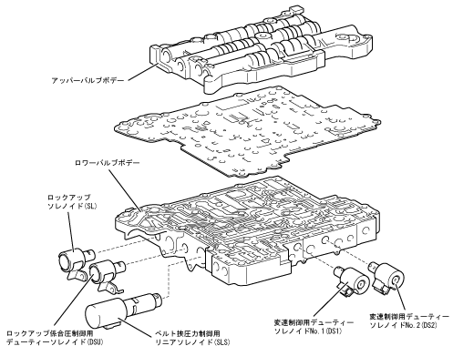

| Hydraulic Control Section |
| ● |
The rigidity of the valve body has been increased to handle the higher pressure of the hydraulic circuit. In addition, all solenoid valves are mounted on the lower valve body side for easier servicing.
|
 |
 Solenoid Names and Functions Solenoid Names and Functions
|
| Hydraulic Control Block Diagram
|
 Belt Clamping Force Control Mechanism Belt Clamping Force Control Mechanism
|
| Shift Control Mechanism
|